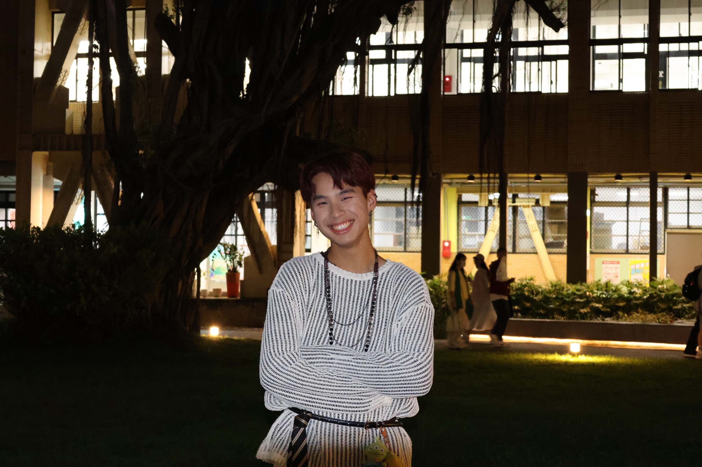

關於這個我 和 這個網站

嗨！我是 劉竣銓，大部分我身邊的人都會叫我榴槤，目前就讀於 國立臺北科技大學資訊工程系二年級。
資工系，對許多人來說就是coding而已，好像確實會比較獨來獨往。但對我來說，寫程式只是我生活的一部分，想當然而，把時間花在社團、課外活動、享受生活才會是我所認為的完整版大學！
這個網站不只是我的自我介紹，如果你正在探索人生或是尋找方向，雖然我的大學才剛剛開始，但也不妨參考看看這裡面有關於我的不一樣的大學生活。
Let's Get Start
大學生活究竟 何為 '大學' 何為 '生活'
大學除了讀大學，更要擴展閱歷，打造多采多姿不後悔的大學生活
🎸 社團參與
加入公共的服務性社團，讓自己除了大學所學的專業知能之外。更能利用這樣的所學與資源，成為偏鄉孩子與學校的支持與亮光
☕ 日常生活樣態
好好生活，比什麼都重要。那些曾打卡過的網美打卡點，紓解壓力與玩樂放鬆的好去處
📸 我眼中的閃光
相機就是我的眼睛，社群就是我分享的最佳管道。記錄生活，讓生活不只是日復一日，而是成為日後持續向前的後備燃油
⚖️ 怎麼讀大學
大學的讀法五花八門，知道自己是誰，知道要往哪裡去。大學只有一次，有些事情不會讓你考慮第二遍，只能放手一搏，大力追求